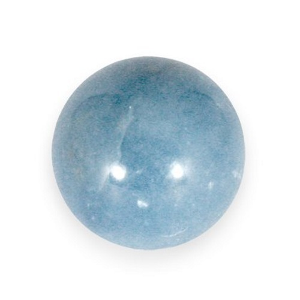

Angelite Associations
- Candle Colour: Light Blue
- Chakra: Heart/Throat
- Element: Air
- Flowers + Plants: Lily, Lilly-of-the-valley, white lotus
- Herbs/Incense/Oils: Cedarwood, Chamomile, Lemon Verbena
- Planet: Uranus
- Zodiac: Aquarius
Angelite Properties and Uses
- Animals: Put Angelite in the ground when burying a pet
- Children: Use to connect children with their guardian angels
- Health/Healing: helps alleviate sunburn, throat and thyroid problems. Can be used for lungs, shoulders, and upper arms
- Protection: Protects against intolerance and prejudice, is the guardian angel stone.
- Psychic: Use for any angel work or to increase telepathic powers with loved ones
- Ritual: Enhances any spells directed towards the Goddess
- Work: Use to encourage kindness and sensitivity
Credit